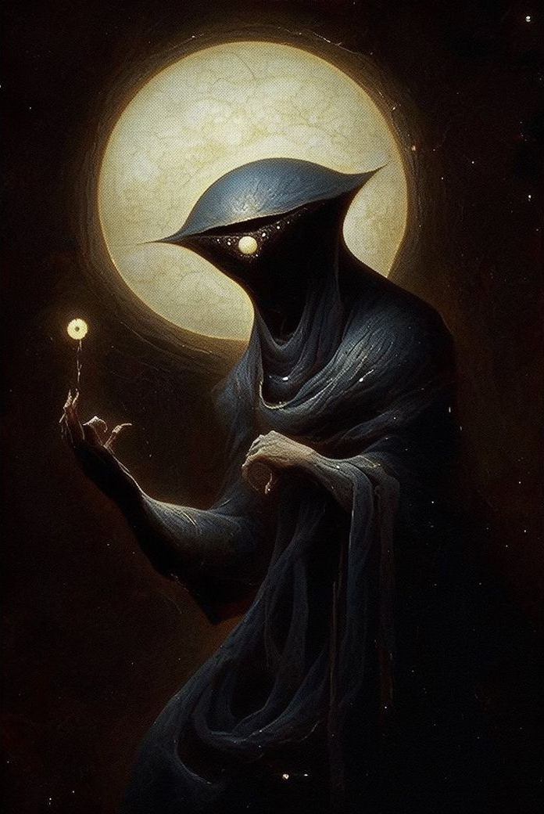

| Race | Exiliumarch |
| Threat | S-Rank |
| Novel | The Mere |
| Role | Observer |
Zizius is an Exiliumarch from the forgotten Dead Sectors of the Mere and a direct manifestation of universal anomalies. Initially nonchalant in his duties as a silent observer, he eventually becomes a central figure in the defiance against the Mundus' deletion protocols.
Born from the fundamental errors of the first world cycle, Zizius’s origins are shrouded in digital static. While most beings are birthed through natural leylines, Zizius appeared as a spontaneous manifestation within the "Dead Sectors".
His early years were spent navigating the collapsing geometry of the Mere, learning to survive in an environment that was actively trying to erase him.
While usually carefree to the point of coming off as lazy, Zizius is a very keen-minded individual who excels at reading the situation and adapting to it. He maintains a cynical distance from the conflicts of the Mundus.
Despite his detached demeanor, he possesses a strong sense of loyalty to fellow anomalies, often stepping in when the "system" attempts to delete those he considers friends.
Zizius maintains a look that reflects his nonchalant attitude toward the chaos of the Mere. He typically wears dark attire designed for traversing unstable geometry, often accented with pink highlights that match his mana signature.
His most striking feature is the visual distortion that occasionally ripples around him—a manifestation of the digital static that marks his birth as a system anomaly.
Stemming from a glitch in the natural order, Zizius is a prodigy of the void. As recorded in his chronicles, Zizius unknowingly awakens his dōjutsu and notices a dark shroud surrounding the anchors of reality. This Hollow Eye allows him to perceive source code and raw mana.
His ability to manipulate the void allows him to learn complex erasure techniques in short periods. He is deemed an elite Anomaly because he can resist divine protocols.
In the chronicles, Zizius came across a fragmented soul being bullied by system-remnants. After rescuing them, they became allies and insisted that the discarded ones stand up to the High Gods. On route to his studies within the void-archives, Zizius's dōjutsu activated fully for the first time, noticing a dark shroud surrounding the leyline carriages.
As he followed the corruption onto a Thunder Rail, Zizius was able to divert a massive system crash. He managed to crash the carriage into a divine monument, leading to a temporary suspension. For the next two weeks, Zizius refined his void manipulation in isolation.
Later, when Zizius's recklessness caused property damage to the sector anchors, he was tasked with repairing the reality-walls. During this, he encountered another Exiliumarch acting unusually aggressive. Zizius's dōjutsu noticed the same dark energy surrounding them.
With a group effort, they subdued the entity. Concerned about how only he could see the "dark mana," Zizius sought more information from ancient archives. During a summoning trial, Zizius attempted to use a high-tier Void Technique, leading to a massive spirit being summoned.